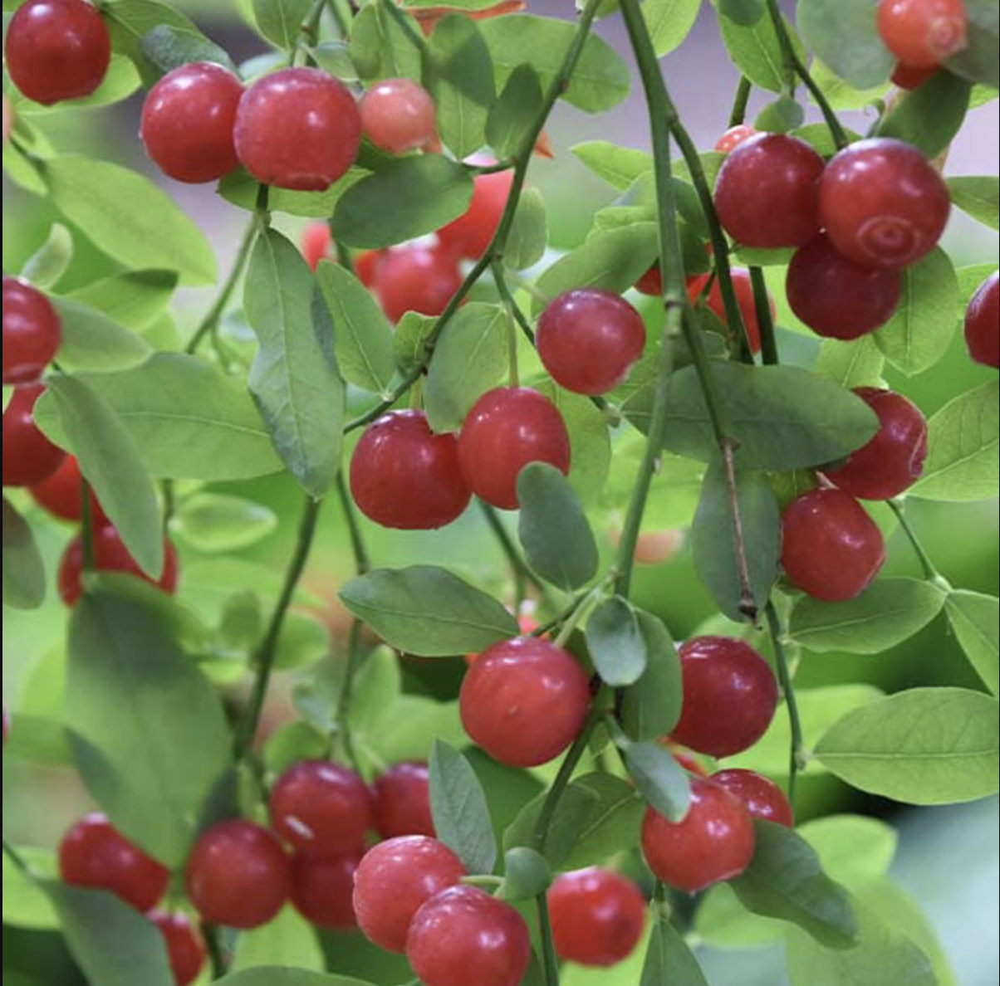

Diet
The Black Tailed Deer are herbivores and eat a variety of shrubs, trees, and grasses. A few examples of these would be willow, salmonberry, poison oak, red huckleberry, and lichens that grow on trees. During late spring to fall their diet changes slightly, with an integration of blackberries, apples, maple, and forbs.
Habitat

These deer live along the Pacific coast from north to southeastern Alaska to northern and western California. However, the most common place to find them is in California, but their range is large, spanning from Santa Barbara County up to Washington. They tend to live on the edge of forests, a transition zone of vegetation between forests and pastures or crop fields. These tend to be safer areas because the dark forest lacks the type of brush that these deer prefer, and open areas lack the hiding spots that they need for protection. With the changing seasons, they migrate to different areas as a way to avoid deep snow and any other harsh conditions they may encounter as winter takes over.
Bio

Black tailed deer are a medium sized breed with a gray-brown coat in the winter and a reddish-brown coat in the summer. Their most noticeable feature is their blacked-tipped tail. November and early December are their mating season and bucks can be seen running back and forth across roads in search of mates. After mating, they spend the rest of the season recovering from broken antlers and weight loss. Most fawns are born in late May and into June, twins are typical but single and triplets can also occur. When they are born, they have no scent, which enables the mother to hide her offspring while she goes off to forage. Deer communicate through scent and have multiple glands on their lower legs that produce different scents and pheromones. The outside of their lower leg produces an alarm scent, the inside of their hock shows mutual recognition, and between their hooves enables a scent trail that other deer can follow when they travel. Knowing this information, deer have excellent sight and smell that help them avoid danger.